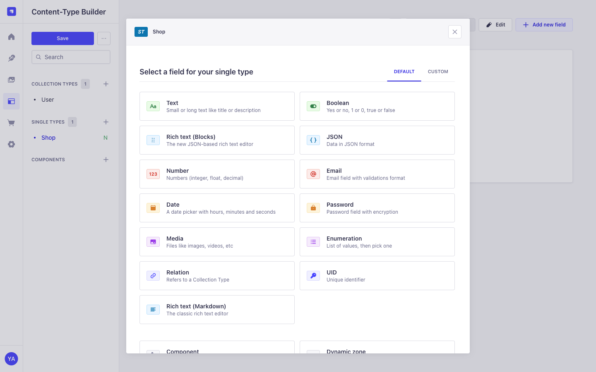
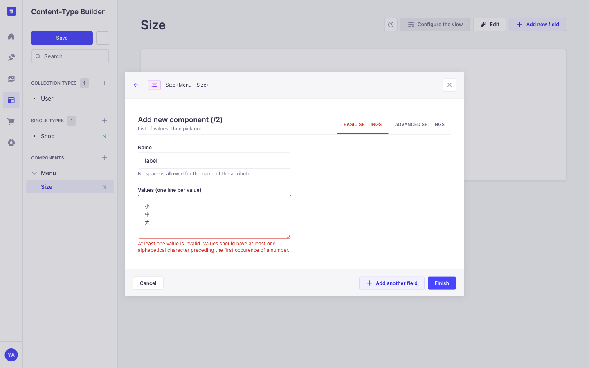
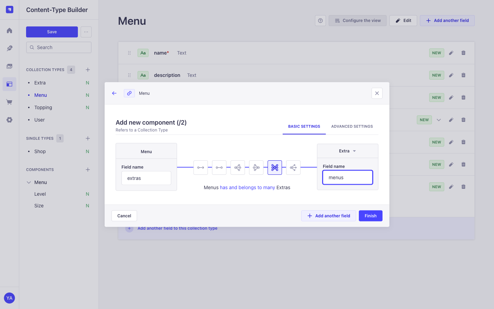
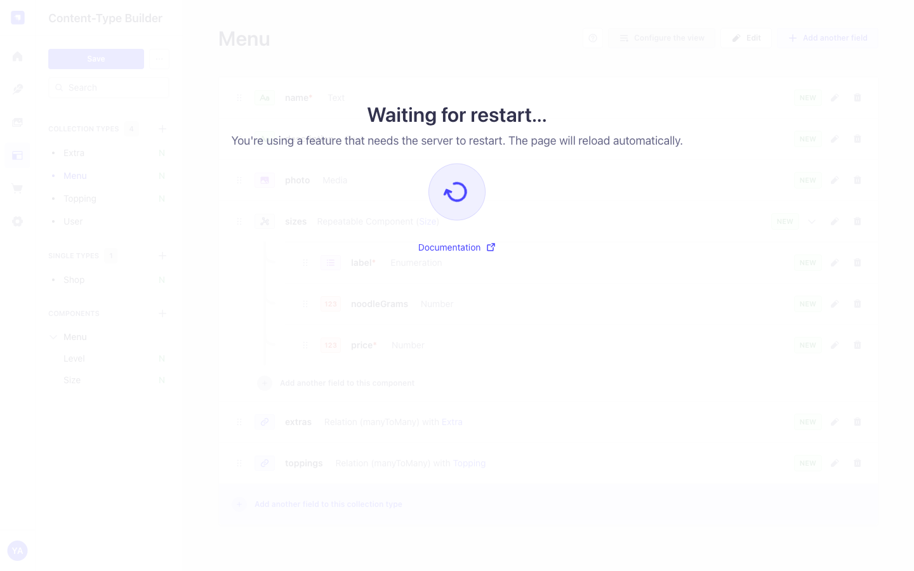

Strapi 스키마 설계: 라멘 가게 메뉴 만들기
"보여주고 싶은 화면"에서 거꾸로 생각해서 데이터 구조를 정하고, 관리자 화면에서 만듭니다. 이 장의 핵심은 조작 방법이 아니라 그릇을 고르는 기준과 화면 조작이 파일(코드)로 남는다는 점입니다.
가게 정보, 메뉴, 사이즈, 토핑, 추가 메뉴를 Strapi 스키마로 정의하고, 화면 조작이 파일로 저장되는 것을 확인한다.
1. 먼저 "무엇을 보여줄지" 정한다
이 자료에서는 예로 キム系 라멘 가게 「麺屋ヤマモリ」의 메뉴 페이지를 만듭니다. 여러분은 자신이 만들고 싶은 사이트로 바꿔서 같은 순서로 생각해 보세요. 이 장에서는 코드를 한 줄도 쓰지 않습니다. 모두 Strapi 관리자 화면에서 합니다. 화면에 필요한 정보를 적어 보면 다음과 같습니다.
- 가게 이름, 주소, 영업시간, 정기휴일, 식권 규칙, 가게 사진
- 메뉴(ラーメン, つけ麺)와 각 메뉴의 사이즈(小/中/大)별 면 양과 가격
- 무료 토핑(ニンニク・ヤサイ・アブラ・カラメ)과 고를 수 있는 양(ナシ/フツウ/マシ/マシマシ)
- 유료 추가(ライス, チャーシュー)와 가격
2. Strapi의 "그릇" 4가지 이해하기
가게 앞에 걸린 메뉴판을 떠올려 보세요. 메뉴판에 적힌 정보는 성격에 따라 4가지로 나뉩니다. Strapi에서 데이터를 만든다는 것은 이 메뉴판을 부품별로 나눠 정리하는 것입니다.
| 그릇 | 메뉴판에서는 | 한마디로 |
|---|---|---|
| ① Single Type | 맨 위의 가게 이름·영업시간 | 하나뿐인 정보. 두 번째를 만들 일이 없습니다 |
| ② Collection Type | ラーメン 카드, つけ麺 카드, 추가 메뉴, 토핑 | 같은 모양으로 여러 개. 새 메뉴가 생기면 카드를 한 장 더 추가합니다 |
| ③ Component | 각 카드 안의 「小 800円 / 中 900円 / 大 1000円」 | 그 카드에 붙은 부품. 카드에서 떼어 내면 "무엇의 小인지" 알 수 없습니다 |
| ④ Relation | 카드와 추가 메뉴·토핑을 잇는 선 | 따로 한 번만 적어 두고 선으로 연결. ライス 가격을 바꾸면 모든 메뉴에 반영됩니다 |
왜 「사이즈」는 선(Relation)이 아니라 부품(Component)인가요?
그림을 보면 ラーメン의 小는 800円, つけ麺의 小는 900円입니다. 사이즈 가격은 메뉴마다 다르기 때문에 공유할 것이 없습니다. 그래서 각 카드 안에 부품으로 붙입니다.
반대로 「ライス ＋100円」은 어느 메뉴에 붙든 똑같습니다. 각 카드에 따로 적어 두면 가격이 오를 때 모든 카드를 고쳐야 하므로, 한 곳에 적고 선으로 연결합니다.
여러분의 사이트라면? 3가지 질문으로 고른다
- 하나뿐인가? → Single Type
- 같은 모양으로 여러 개 있고, 목록으로 관리하는가? → Collection Type
- 그 정보가 어딘가에 "붙어 있는" 것인가, 여러 곳에서 "공유하는" 것인가? → 붙어 있으면 Component, 공유하면 Collection으로 따로 만들고 Relation으로 연결
| 사이트 종류 | Single Type | Collection Type | Component | Relation |
|---|---|---|---|---|
| 회사 홈페이지 | 회사 소개 | 공지사항, 직원 | 직원의 SNS 링크 목록 | 공지사항 → 작성한 직원 |
| 블로그 | 블로그 소개 | 글, 카테고리, 태그 | 글 안의 "관련 링크" 목록 | 글 ↔ 태그 |
| 온라인 쇼핑 | 배송 안내 | 상품, 브랜드 | 상품의 색상·사이즈별 재고 | 상품 → 브랜드 |
선(Relation)을 긋는 방법은 3가지
선을 그을 때는 "한쪽 하나가 반대쪽 몇 개와 이어지는가"를 정합니다.
이번 라멘 가게에 적용하면
| 정보 | 그릇 | 이유 |
|---|---|---|
| 가게 정보 | Single Type Shop | 사이트에 하나뿐 |
| 메뉴 | Collection Type Menu | 여러 개, 목록으로 관리 |
| 사이즈와 가격 | Component menu.size (반복) | 메뉴마다 값이 다른 부품 |
| 무료 토핑 | Collection Type Topping | 여러 메뉴에서 공유 |
| 토핑 양(ナシ〜マシマシ) | Component menu.level (반복) | 각 토핑에 딸린 선택지 |
| 유료 추가 | Collection Type Extra | 여러 메뉴에서 공유, 가격을 한 곳에서 관리 |
| 메뉴 ↔ 토핑, 메뉴 ↔ 추가 | Relation (다 대 다) | 메뉴마다 고를 수 있는 것이 다르고, 서로 여러 개 |
여러분의 사이트를 설계할 때도 먼저 "화면에 보여줄 정보"를 적고, 위의 3가지 질문으로 그릇을 고르면 됩니다.
3. 관리자 화면에서 만들기
실행 위치: 저장소 루트
pnpm dev:db # DB 컨테이너 기동
pnpm dev:cms # Strapi 기동 → http://localhost:1337/admin처음 접속하면 관리자 등록 화면이 나옵니다(로컬 전용 계정). 등록 후 왼쪽 메뉴의 Content-Type Builder(블록 모양 아이콘)에서 그릇을 만듭니다.

이번에 만든 그릇과 필드입니다. 필수 항목(Required)과 사진의 허용 형식(Images만)은 각 필드의 ADVANCED SETTINGS 탭에서 정합니다.
| 그릇 | 필드 (종류) |
|---|---|
Single Type Shop | name(Text, 필수), catchphrase, address, closedDays(Text), businessHours, ticketRule(Text Long = 여러 줄), photo(Media Single, Images만) |
Component menu.size | label(Enumeration: small / medium / large, 필수), noodleGrams(Number), price(Number, 필수) |
Component menu.level | label(Text, 필수. ナシ・フツウ・マシ・マシマシ 등) |
Collection Type Topping | name(Text, 필수), description(Text Long), levels(Component menu.level, Repeatable) |
Collection Type Extra | name(Text, 필수), price(Number, 필수), photo(Media Single, Images만) |
Collection Type Menu | name(Text, 필수), description(Text Long), photo(Media Single, Images만), sizes(Component menu.size, Repeatable), extras·toppings(Relation, 다대다) |
만들 때 헷갈리기 쉬운 점은 세 가지입니다.
① Enumeration의 값은 영문 식별자: 小 中 大를 그대로 넣으면 오류가 납니다. Enumeration 값은 화면에 보이는 글자가 아니라 프로그램이 쓰는 식별자입니다. "小/中/大"라는 표시는 화면(Next.js) 쪽에서 붙입니다(04장).

② Repeatable: 부품을 여러 개 붙일 수 있게 합니다. 메뉴 하나에 사이즈 3개(小·中·大), 토핑 하나에 양 4개(ナシ〜マシマシ)를 붙이기 위해 켭니다.
③ Relation의 종류: 가운데 아이콘을 고르면 아래에 의미가 문장으로 표시됩니다. 그 문장이 의도와 맞는지 읽어 보고 고릅니다.

4. 저장: 화면 조작이 "파일"이 된다
왼쪽 위의 Save를 누릅니다. Strapi가 서버를 재시작하고 페이지가 자동으로 새로고침됩니다.

터미널에서 확인해 봅니다.
실행 위치: 저장소 루트
git status apps/cms/srcapps/cms/src/
├── api/
│ ├── extra/
│ ├── menu/
│ │ ├── content-types/menu/schema.json ← Menu의 설계도 (화면에서 고른 필드가 그대로 적힘)
│ │ ├── controllers/menu.ts ┐
│ │ ├── routes/menu.ts ├ API를 자동으로 만드는 코드 (손대지 않음)
│ │ └── services/menu.ts ┘
│ ├── shop/
│ └── topping/ (menu와 같은 구성)
└── components/
└── menu/
├── level.json ← 부품 Level의 설계도
└── size.json ← 부품 Size의 설계도schema.json 안을 보기
"sizes": { "type": "component", "component": "menu.size", "repeatable": true },
"extras": { "type": "relation", "relation": "manyToMany", "target": "api::extra.extra", "inversedBy": "menus" },
"toppings": { "type": "relation", "relation": "manyToMany", "target": "api::topping.topping", "inversedBy": "menus" }화면에서 고른 내용이 그대로 JSON으로 적혀 있습니다.
git status에 위의 초록색 폴더가 새 파일로 표시됩니다.
5. 커밋
실행 위치: 저장소 루트
git add .
git commit -m "feat(cms): メニューのスキーマを追加"커밋되는 것은 apps/cms/src의 설계도 파일과 apps/cms/types/generated(Strapi가 자동 생성한 타입)입니다. 관리자 화면에서 입력한 데이터는 DB에 있으므로 커밋에 들어가지 않습니다.